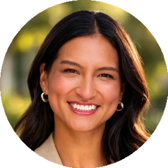
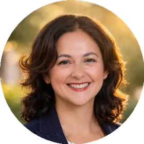

Five million dollars, deployed nearly nine times over.
A $3.1M pool funds the pilot's 31 founders. The same money, recovering against income, keeps going long after the 24-month pilot ends.
deployment of $3.1M
10-year life as that capital recycles
Each dollar is designed to fund more than one founder.
- 01Donors and foundations give to a partnered donor-advised fund.
- 02The DAF sponsor invests in a founder through a Recoverable SAFE, $25K to $100K per founder.
- 03The founder builds, with mentors and follow-on investors from FounderFamilia, AngelFamilia and VCFamilia.
- 04Once their income clears an agreed floor, the founder shares 10% of it until a set cap is reached.
- 05That money goes back into the DAF and funds the next founder.
Back one founder, and a thousand people show up.
FamiliaFund sits inside LaFamilia Foundation, a community of 1,000+ founders, operators, angels and investors across FounderFamilia, VCFamilia and AngelFamilia. It was built by and for Latine builders.
When a founder needs advice, a warm intro or qualified leads, that request goes to a thousand vetted members who know them like familia. Every founder we back then refers the next one, so the network gets stronger with each check.


Three pieces that make the loop work.
The Recoverable SAFE
Part income share, part SAFE. Founders keep most of their company. The fund keeps a small stake so it shares in the upside when a company takes off.
The Partnered DAF
A third-party DAF sponsor holds the money and is the investor of record. Returned capital goes back in, so a gift gets used again instead of once.
AI impact reporting
Founders send a quick WhatsApp voice note in English or Spanish. We turn that into IRIS+ and SDG metrics, with a goal of 60% less reporting time.
What a founder agrees to, in plain language.
The Recoverable SAFE recovers against a founder's income, not their ownership.
We built these terms with founders. They were designed around people who support family, carry no inherited wealth and cannot afford a bad month.
Illustrative. Final terms are set in the executed Recoverable SAFE and Founder Commitment Agreement.
24 months to prove the model before we scale it.
~70% of the fund size goes directly to founders. The rest builds the legal, servicing and data systems that let the money recycle for years.
- Months 1–6Legal structure, governance and SAFE documents
- Month 3Core team and service providers in place
- Months 4–10AI reporting system and servicing live
- Months 6–1831 founders funded
- Months 15–24Public learning report
- Months 16–24Early commitments for Fund 1